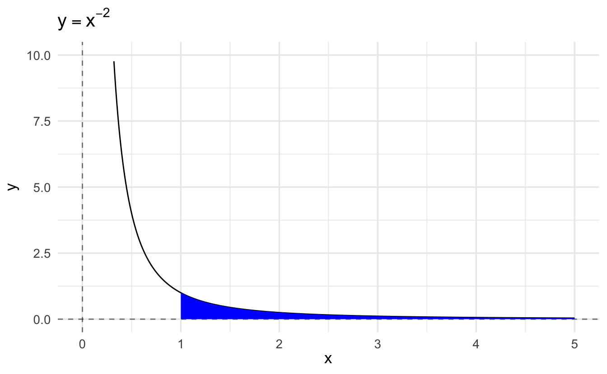
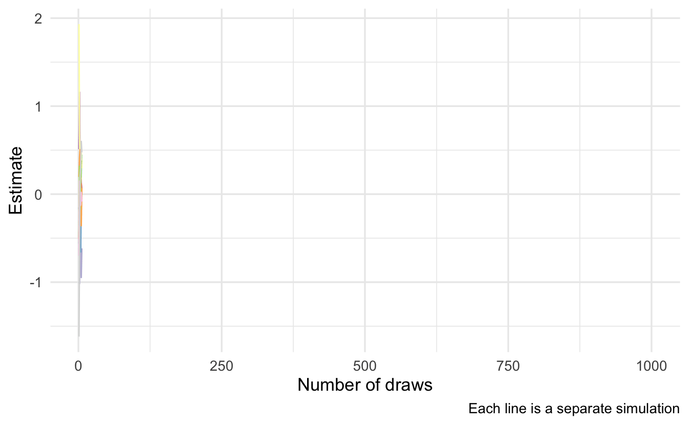
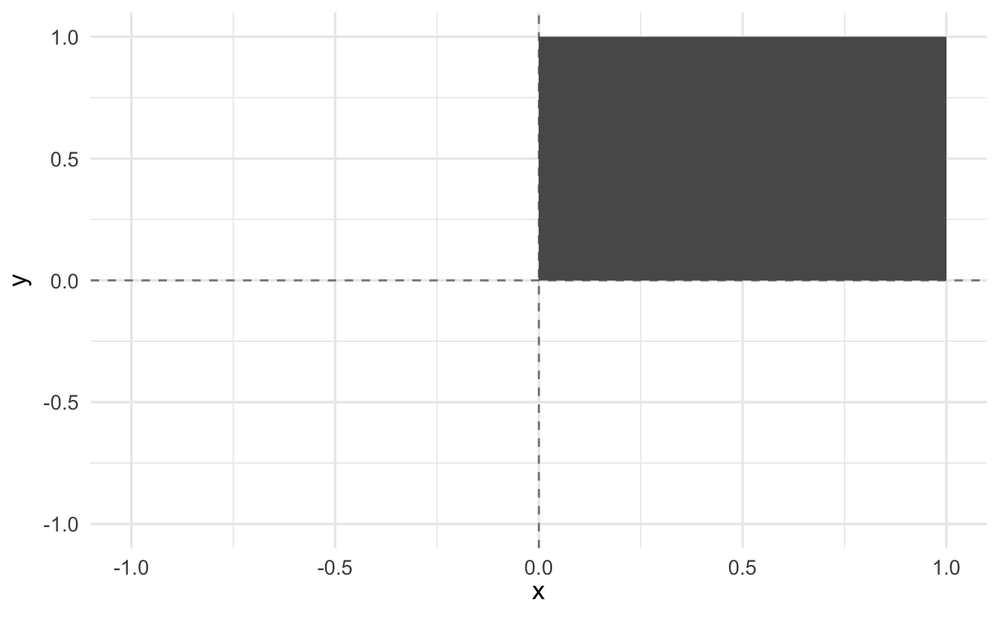
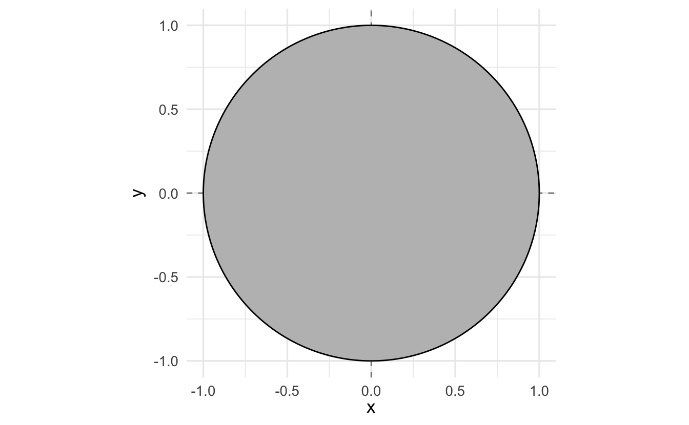
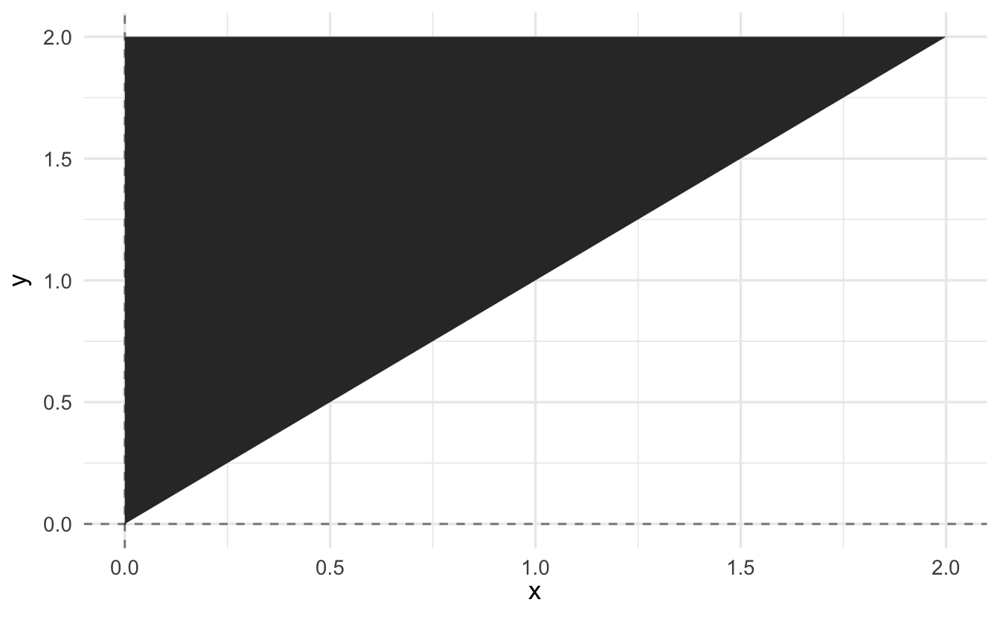

Lecture 6 Integration and integral calculus
Learning objectives
- Summarize areas, slices, and integrals
- Apply common rules to calculate definite integrals
- Define the fundamental theorem of calculus
- Calculate antiderivatives and integrals using integration by substitution and integration by parts
- Evaluate improper integrals
- Evaluate multivariate integrals
Supplemental readings
- Chapters 19-20, Pemberton and Rau (2011)
- OpenStax Calculus: Volume 2, ch 1-2, 3.1, 3.7
6.1 Prepare for the journey
](https://imgs.xkcd.com/comics/differentiation_and_integration.png)
Figure 6.1: Differentiation and Integration. Source: xkcd
6.2 Indefinite integration
So far, we’ve been interested in finding the derivative \(f=F'\) of a function \(F\). However, sometimes we’re interested in exactly the reverse: finding the function \(F\) for which \(f\) is its derivative. We refer to \(F\) as the antiderivative of \(f\).
For example what is the antiderivative of \(f(x) = \frac{1}{x^2}\)?
\[ \begin{aligned} \int \frac{1}{x^2} \,dx &= -\frac{1}{x} + c \\ \frac{d}{dx} \left[ -\frac{1}{x} + c \right] &= \frac{1}{x^2} \end{aligned} \]
We know from derivatives how to manipulate \(F\) to get \(f\). But how do you express the procedure to manipulate \(f\) to get \(F\)? For that, we need a new symbol, which we will call indefinite integration. The indefinite integral of \(f(x)\) is written
\[F(x) = \int f(x) \,dx \]
6.2.1 Many possible antiderivatives
Draw the function \(f(x)\) and its indefinite integral, \(\int\limits f(x) \,dx\)
\[f(x) = (x^2-4)\]
The indefinite integral of the function \(f(x) = (x^2-4)\) can, for example, be \(F(x) = \frac{1}{3}x^3 - 4x\). But it can also be \(F(x) = \frac{1}{3}x^3 - 4x + 1\), because the constant 1 disappears when taking the derivative.
Figure 6.2: The Many Indefinite Integrals of a Function
Notice from these examples that while there is only a single derivative for any function, there are multiple antiderivatives: one for any arbitrary constant \(c\). \(c\) just shifts the curve up or down on the \(y\)-axis. If more information is present about the antiderivative — e.g., that it passes through a particular point — then we can solve for a specific value of \(c\).
6.2.2 Common rules of integration
Some common rules of integrals follow by virtue of being the inverse of a derivative.
- Constants are allowed to slip out: \(\int a f(x)\,dx = a\int f(x)\,dx\)
- Integration of the sum is sum of integrations: \(\int [f(x)+g(x)]\,dx=\int f(x)\,dx + \int g(x)\,dx\)
- Reverse Power-rule: \(\int x^n \,dx = \frac{1}{n+1} x^{n+1} + c\)
- Exponents are still exponents: \(\int e^x \,dx = e^x +c\)
- Recall the derivative of \(\log(x)\) is one over \(x\), and so: \(\int \frac{1}{x} \,dx = \log x + c\)
- Reverse chain-rule: \(\int e^{f(x)}f^\prime(x)\,dx = e^{f(x)}+c\)
- More generally: \(\int [f(x)]^n f'(x)\,dx = \frac{1}{n+1}[f(x)]^{n+1}+c\)
- Remember the derivative of a log of a function: \(\int \frac{f^\prime(x)}{f(x)}\,dx=\log f(x) + c\)
6.2.3 Practice integrating functions
Simplify the following indefinite integrals:
\(\int 3x^2 \,dx\)
Click for the solution
Factor out the constant \(3\) and reverse power rule.
\[ \begin{aligned} \int 3x^2 \,dx &= 3 \int x^2 \,dx \\ &= 3 \left( \frac{x^3}{3} + c \right) \\ &= x^3 + c \end{aligned} \]
\(\int (2x+1) \,dx\)
Click for the solution
Integrate the sum term by term and factor out constants.
\[ \begin{aligned} \int (2x+1) \,dx &= 2 \int x \,dx + \int 1 \,dx \\ &= x^2 + c + \int 1 \,dx \\ &= x^2 + x + c \end{aligned} \]
\(\int e^x e^{e^x} \,dx\)
Click for the solution
Reverse chain-rule and knowledge of the antiderivative of \(e^x\).
\[\int e^x e^{e^x} \,dx = e^{e^x} + c\]
6.3 The definite integral: area under the curve
If there is an indefinite integral, there must be a definite integral. Indeed there is, but the notion of definite integrals comes from a different objective: finding the area under a function.
Suppose we want to determine the area \(A(R)\) of a region \(R\) defined by a curve \(f(x)\) and some interval \(a\le x \le b\).
Figure 6.3: The Riemann Integral as a Sum of Evaluations
One way to calculate the area would be to divide the interval \(a\le x\le b\) into \(n\) subintervals of length \(\Delta x\) and then approximate the region with a series of rectangles, where the base of each rectangle is \(\Delta x\) and the height is \(f(x)\) at the midpoint of that interval. \(A(R)\) would then be approximated by the area of the union of the rectangles, which is given by
\[S(f,\Delta x)=\sum\limits_{i=1}^n f(x_i)\Delta x\]
and is called a Riemann sum.
As we decrease the size of the subintervals \(\Delta x\), making the rectangles “thinner,” we would expect our approximation of the area of the region to become closer to the true area. This allows us to express the area as a limit of a series:
\[A(R)=\lim\limits_{\Delta x\to 0}\sum\limits_{i=1}^n f(x_i)\Delta x\]
This is how we define the “Definite” Integral.
6.3.1 The definite integral (Riemann)
If for a given function \(f\) the Riemann sum approaches a limit as \(\Delta x \to 0\), then that limit is called the Riemann integral of \(f\) from \(a\) to \(b\). We express this with the \(\int\), symbol, and write
\[\lim\limits_{\Delta x\to 0} \sum\limits_{i=1}^n f(x_i)\Delta x = \int\limits_a^b f(x) \,dx\]
We read
\[\int\limits_a^b f(x) \,dx\]
as the definite integral of \(f\) from \(a\) to \(b\), which is the area under the “curve” \(f(x)\) from point \(x=a\) to \(x=b\).
Theorem 6.1 (Continuous functions) Suppose \(f:[a,b] \rightarrow \Re\) is a continuous function. Then \(f\) is integrable.
Theorem 6.2 (Monotonic functions) Suppose \(f:[a,b]\rightarrow \Re\) is a monotonic function. Then \(f\) is integrable.
6.3.2 Counterexamples
Example 6.1 Suppose \(f:[0,1]\rightarrow \frac{1}{x}\)
\[\int_{0}^{1} \frac{1}{x} \,dx\]
Then \(\frac{1}{x}\) is not integrable on \([a,b]\) because the area that the integral would represent is infinite.
Example 6.2 \[ \begin{aligned} f(x) &= 1 \text{ if } x \text{ rational} \\ &= 0 \text{ if } x \text{ irrational} \end{aligned} \]
Not integrable, because every interval will contain a discontinuous jump.
6.3.3 Fundamental theorem of calculus
The fundamental theorem of calculus shows us that this Riemann sum is, in fact, the antiderivative. Let the function \(f\) be bounded on \([a,b]\) and continuous on \((a,b)\). Then, use the symbol \(F(x)\) to denote the definite integral from \(a\) to \(x\):
\[F(x)=\int\limits_a^x f(t) \,dt, \quad a\le x\le b\]
Then \(F(x)\) has a derivative at each point in \((a,b)\) and
\[F^\prime(x)=f(x), \quad a<x<b\]
That is, the definite integral function of \(f\) is one of the antiderivatives of some \(f\).
This is again a long way of saying that differentiation is the inverse of integration. But now, we’ve covered definite integrals.
The second theorem gives us a simple way of computing a definite integral as a function of indefinite integrals. Let the function \(f\) be bounded on \([a,b]\) and continuous on \((a,b)\). Let \(F\) be any function that is continuous on \([a,b]\) such that \(F'(x)=f(x)\) on \((a,b)\). Then
\[\int\limits_a^bf(x)\,dx = F(b)-F(a)\]
So the procedure to calculate a simple definite integral \(\int\limits_a^b f(x)\,dx\) is then
- Find the indefinite integral \(F(x)\).
- Evaluate \(F(b)-F(a)\).
6.3.3.1 Uniform distribution
Suppose \(f:\Re \rightarrow \Re\), with
\[ \begin{aligned} f(x) &= 1 \text{ if } x \in [0,1] \\ f(x) &= 0 \text{ otherwise } \end{aligned} \]
What is the area under \(f(x)\) from \([0, 1/2]\)?
\[ \begin{aligned} \int_{0}^{1/2} f(x)\,dx &= \int_{0}^{1/2} 1 \,dx \\ &= x|_{0}^{1/2} \\ &= (1/2) - (0 ) \\ &= 1/2 \end{aligned} \]
We will call \(f(x) = 1\) the uniform distribution.
6.3.3.2 Area under a line
Suppose \(f:\Re \rightarrow \Re\), with
\[f(x) = x\]
Evaluate the \(\int_{2}^{t}f(x)\,dx\).
\[ \begin{aligned} \int_{2}^{t}f(x)\,dx &= \int_{2}^{t} x \,dx \\ &= \frac{x^{2} }{2} |_{2}^{t} \\ &= \frac{t^2}{2} - \frac{2^2}{2} \\ &= \frac{t^2}{2} - \frac{4}{2} = \frac{t^2}{2} - 2 \end{aligned} \]
6.3.4 Common rules for definite integrals
The area-interpretation of the definite integral provides some rules for simplification.
There is no area below a point:
\[\int\limits_a^a f(x)\,dx=0\]
Reversing the limits changes the sign of the integral:
\[\int\limits_a^b f(x)\,dx=-\int\limits_b^a f(x)\,dx\]
Sums can be separated into their own integrals:
\[\int\limits_a^b [\alpha f(x)+\beta g(x)]\,dx = \alpha \int\limits_a^b f(x)\,dx + \beta \int\limits_a^b g(x)\,dx\]
Areas can be combined as long as limits are linked:
\[\int\limits_a^b f(x) \,dx +\int\limits_b^c f(x)\,dx = \int\limits_a^c f(x)\,dx\]
6.3.5 Practice solving definite integrals
Simplify the following definite intergrals.
\(\int\limits_1^1 3x^2 \,dx\)
Click for the solution
\(0\). Area under a point is 0.
\(\int\limits_0^4 (2x+1) \,dx\)
Click for the solution
Integrate the sum by term and factor out constants.
\[ \begin{aligned} \int\limits_0^4 (2x+1) \,dx &= 2 \int_0^4 2x \,dx + \int_0^4 1 \,dx \\ &= x^2|_0^4 + x |_0^4 \\ &= (4^2 - 0^2) + (4 - 0) \\ &= 16 + 4 \\ &= 20 \end{aligned} \]
\(\int\limits_{-2}^0 e^x e^{e^x} dx + \int\limits_0^2 e^x e^{e^x} \,dx\)
Click for the solution
Limits are linked, so combine together and use definition of antiderivative we calculated earlier.
\[ \begin{aligned} \int\limits_{-2}^0 e^x e^{e^x} dx + \int\limits_0^2 e^x e^{e^x} \,dx &= \int\limits_{-2}^2 e^x e^{e^x} \,dx \\ &= e^{e^{x}} |_{-2}^2 \\ &= e^{e^{2}} - e^{e^{-2}} \\ &\approx 1617 \end{aligned} \]
6.3.6 Integration by substitution
From the second fundamental theorem of calculus, we know that a quick way to get a definite integral is to first find the indefinite integral, and then just plug in the bounds.
Sometimes the integrand (the thing that we are trying to take an integral of) doesn’t appear integrable using common rules and antiderivatives. A method one might try is integration by substitution, which is related to the Chain Rule.
Suppose we want to find the indefinite integral \[\int g(x)\,dx\] but \(g(x)\) is complex and none of the formulas we have seen so far seem to apply immediately. The trick is to come up with a new function \(u(x)\) such that \[g(x)=f[u(x)]u'(x).\]
Why does an introduction of yet another function end of simplifying things? Let’s refer to the antiderivative of \(f\) as \(F\). Then the chain rule tells us that
\[\frac{d}{dx} F[u(x)]=f[u(x)]u'(x)\]
So, \(F[u(x)]\) is the antiderivative of \(g\). We can then write
\[\int g(x) \,dx= \int f[u(x)]u'(x)\,dx = \int \frac{d}{dx} F[u(x)]\,dx = F[u(x)]+c\]
To summarize, the procedure to determine the indefinite integral \(\int g(x)\,dx\) by the method of substitution:
- Identify some part of \(g(x)\) that might be simplified by substituting in a single variable \(u\) (which will then be a function of \(x\)).
- Determine if \(g(x)\,dx\) can be reformulated in terms of \(u\) and \(du\).
- Solve the indefinite integral.
- Substitute back in for \(x\)
Example 6.3 Consider
\[\int \frac{x}{x^2 + 1} \,dx\]
This is particularly nasty to solve given just the rules we learned above. However, if we multiply the expression by \(\frac{2}{2}\) and pull the constant from the denominator outside the integral:
\[\frac{1}{2} \int \frac{2x}{x^2 + 1} \,dx\]
we see that the derivative of \(x^2 + 1\) is \(2x\), which is contained in the numerator. So
\[ \begin{aligned} u &= x^2 + 1 \\ du &= 2x \,dx \\ \int \frac{x}{x^2 + 1} \,dx &= \frac{1}{2} \int \frac{2x}{x^2 + 1} \,dx \\ &= \frac{1}{2} \int \frac{1}{u} \,du \\ &= \frac{1}{2} \log(u) + c \\ &= \frac{1}{2} \log(x^2 + 1) + c \\ \end{aligned} \]
- Antiderivative of \(\frac{1}{x}\) is \(\log(x)\) - this is known
- After integrating the \(u\) function, substitute back in the original \(x\) based function
6.3.7 Integration by parts
Another useful integration technique is integration by parts, which is related to the product rule of differentiation. The product rule states that
\[\frac{d}{dx} f(x) g(x) = f(x) g'(x) + g(x) f'(x)\]
Another way of framing this is that if the function \(g\) has a continuous derivative,
\[\int_a^b g'(x) dx = g(b) - g(a)\]
Suppose that \(g(x)\) can be expressed as the product of two functions \(g(x) = p(x)q(x)\). Rewriting the above integral and applying the product rule to expand \(g'(x)\) we get
\[\int_a^b (p'(x)q(x) + p(x)q'(x)) dx = p(b)q(b) - p(a)q(a)\]
We can rearrange this equation to read as
\[\int_a^b p'(x)q(x) dx = p(b)q(b) - p(a)q(a) - \int_a^b p(x)q'(x) dx\]
The goal is to decompose \(g(x)\) into the product of two functions, one of which is easy to integrate and the other becomes simpler once differentiated. Denote the first function by \(p'(x)\) where \(p(x)\) is easily found, and the second function as \(q(x)\).
For indefinite integrals, integration by parts is
\[\int p'(x)q(x) dx = p(x)q(x) - \int p(x)q'(x) dx\]
Example 6.4 Simplify the following integral:
\[\int x \log(x) \,dx\]
\[ \begin{aligned} p(x) &= \frac{1}{2}x^2 \\ p'(x) &= x \, dx \\ q(x) &= \log(x) \\ q'(x) &= \frac{1}{x} \,dx \\ \end{aligned} \]
\[ \begin{aligned} \int p'(x)q(x) dx &= p(x)q(x) - \int p(x)q'(x) dx \\ &= \frac{1}{2}x^2 \times \log(x) - \int \frac{1}{2}x^2 \times \frac{1}{x} \,dx \\ &= \frac{1}{2}x^2\log(x) - \int \frac{1}{2}x \,dx \\ &= \frac{1}{2}x^2\log(x) - \frac{1}{2} \int x \,dx \\ &= \frac{1}{2}x^2\log(x) - \frac{x^2}{4} + c \end{aligned} \]
- Pull out the constant from the integral
- \(\int x \,dx = \frac{1}{2}x^2\) - simple application of the power rule
6.4 Infinite integrals
Consider the definite integral
\[ \begin{aligned} \int_1^X x^{-2} \,dx &= -\frac{1}{x} |_1^X \\ &= -\frac{1}{X} - -\frac{1}{1} \\ &= -\frac{1}{X} + 1 \\ &= 1 - X^{-1} \end{aligned} \]
As \(X \rightarrow \infty, \frac{1}{X} \rightarrow 0\). Hence
\[\lim_{X \rightarrow \infty} \int_1^X x^{-2} \,dx = 1\]
which can be written compactly as
\[\int_1^\infty x^{-2} \,dx = 1\]

This is an example of an infinite integral. Infinite refers not to the value of the integral (which is in fact the finite number 1) but to the fact that integration is taking place over an infinite integral. The crucial point is that the shaded region extends infinitely far to the right, but tapers sufficiently sharply for its area to be the finite number 1.
Definition 6.1 Suppose we have a continuous function \(f(x)\) defined for all \(x \geq a\), and suppose the integral \(\int_a^X f(x)\,dx\) approaches a finite limit \(L\) as \(X \rightarrow \infty\). Then we write
\[\int_a^\infty f(x)\,dx = L\]
In this case, we say that the indefinite integral exists or converges.
By contrast, if \(\int_a^X f(x)\,dx\) does not approach a finite limit as \(X \rightarrow \infty\), then we say that the infinite integral does not exist or diverges.
Example 6.5 \[f(x) = \frac{1}{x}\]
\[ \begin{aligned} \int_{1}^{\infty} \frac{1}{x} \,dx &= \lim_{t \rightarrow \infty} \int_{1}^{t} \frac{1}{x} \,dx \\ &= \lim_{t \rightarrow \infty} (\log x)|_{1}^{t} \\ &= \lim_{t \rightarrow \infty} (\log t) - \lim_{t \rightarrow \infty} (\log 1) \end{aligned} \]
Does not converge.
6.4.1 Two-sided infinite integrals
If \(f(x)\) is a continuous function defined for all \(x \leq a\), and if the definite integral \(\int_Y^a f(x) \,dx\) approaches a finite limit as \(Y \rightarrow -\infty\), we denote the limit by
\[\int_{-\infty}^a f(x) \,dx\]
If the integrals \(\int_{-\infty}^a f(x) \,dx\) and \(\int_a^\infty f(x) \,dx\) both exist, we denote their sum by
\[\int_{-\infty}^\infty f(x) \,dx\]
This property is extremely important when we discuss probability distributions, since a major property of a probability density function is that for a given PDF \(f(x)\),
\[\int_{-\infty}^\infty f(x) \,dx = 1\]
6.4.2 Improper integrals
An improper integral is an integral where the integrand is not defined at one of the limits of integration. Consider the example
\[I = \int_0^1 \frac{1}{\sqrt{x}} \,dx\]
In this case, the lower limit causes the problem since \(\frac{1}{\sqrt{x}} \rightarrow \infty\) as \(x \rightarrow 0\). Nevertheless, we can define and evaluate \(I\) as
\[I = \lim_{\delta \downarrow0} \int_\delta^1 \frac{1}{\sqrt{x}} \,dx\]
where \(\downarrow\) means “tends from above”. In fact,
\[ \begin{aligned} I &= \lim_{\delta \downarrow0} \int_\delta^1 \frac{1}{\sqrt{x}} \,dx \\ &= \lim_{\delta \downarrow0} \left[ 2\sqrt{x} \right]_\delta^1 \\ &= \lim_{\delta \downarrow0} (2 - 2\sqrt{\delta}) \\ &= 2 \end{aligned} \]
More generally, suppose the function \(f(x)\) is defined and continuous for \(a < x \leq b\), but is not defined for \(x = a\). If the integral
\[\int_{a + \delta}^b f(x) \,dx\]
tends to a finite limit \(I\) as \(\delta \downarrow 0\), then we say that the integral \(\int_a^b f(x) \,dx\) exists and has the value \(I\). Otherwise, we say that the integral \(\int_a^b f(x) \,dx\) diverges.
6.5 Monte Carlo and integration
Suppose that we want to compute the expected value of a function \(g\) of \(X\) where
\[\E[g(X)] = \int_{-\infty}^{\infty} g(x) f_X(x) \,dx\]
but \(f(x)\) is complicated.
\[f(x) = \frac{\exp\left(- \frac{(x- \mu)^2}{2\sigma^2} \right) }{\sqrt{2\pi}}\]
Substituting into \(\E[g(X)]\) we have the definite integral
\[\int_{-\infty}^{\infty} x \times \frac{\exp\left(- \frac{(x- \mu)^2}{2\sigma^2} \right) }{\sqrt{2\pi}} \,dx\]
\(f(x)\) is a probability density function and \(\E[g(X)]\) is its expected value. We’ll learn more about this next week, but for now the important thing to focus on is that
\[\int_{-\infty}^{\infty} x \times \frac{\exp\left(- \frac{(x- \mu)^2}{2\sigma^2} \right) }{\sqrt{2\pi}} \,dx\]
is going to be incredibly difficult to calculate analytically.
Suppose we can generate random draws of \(X\) \(x_1, \ldots, x_n\) and we computed the arithmetic mean of \(g(x)\) over the sample, then we would have the Monte Carlo estimate
\[\tilde{g_n}(x) = \frac{1}{n} \sum_{i=1}^n g(x_i)\]
which is the Monte Carlo estimator14 of \(\E[g(x)]\).
As \(n \rightarrow \infty\), \(\tilde{g_n}(x) \leadsto \E[g(x)]\).15 We can demonstrate this using the above example where \(\mu = 0, \sigma^2 = 1\). Analytically \(\E[g(x)] = 0\).16 If we simulate this repeatedly, we can see that as we increase the number of draws our estimate \(\tilde{g_n}(x)\) converges towards 0.

6.6 Multivariate integration
Suppose we have a function \(f:X \rightarrow \Re^{1}\), with \(X \subset \Re^{2}\). We will integrate a function over an area. Suppose that area, \(A\), is in 2-dimensions
\[A = \{x, y : x \in[0,1], y \in [0,1] \}\]

\[A = \{x, y: x^2 + y^2 \leq 1 \}\]

\[A = \{ x, y: x< y, x, y \in (0,2) \}\]

How do calculate the area under the function over these regions?
Definition 6.2 (Multivariate integration) Suppose \(f:X \rightarrow \Re\) where \(X \subset \Re^{n}\). We will say that \(f\) is integrable over \(A \subset X\) if we are able to calculate its area with refined partitions of \(A\) and we will write the integral \(I =\int_{A} f(\boldsymbol{x}) d\boldsymbol{A}\).
That’s horribly abstract. There is an extremely helpful theorem that makes this manageable.
Theorem 6.3 (Fubini's theorem) Suppose \(A = [a_{1}, b_{1}] \times [a_{2}, b_{2} ] \times \ldots \times [a_{n}, b_{n}]\) and that \(f:A \rightarrow \Re\) is integrable. Then
\[\int_{A} f(\boldsymbol{x}) d\boldsymbol{A} = \int_{a_{n}}^{b_{n}} \int_{a_{n-1}}^{b_{n-1}} \ldots \int_{a_{2}}^{b_{2}} \int_{a_{1}}^{b_{1}} f(\boldsymbol{x})\,dx_{1} \,dx_{2} \ldots \,dx_{n-1} \,dx_{n}\]
- Start with the inside integral \(x_{1}\) is the variable, everything else a constant
- Work inside to out, iterating
- At the last step, we should arrive at a number
6.6.0.1 Multivariate uniform distribution
Suppose \(f:[0,1] \times [0,1] \rightarrow \Re\) and \(f(x_{1}, x_{2}) = 1\) for all \(x_{1}, x_{2} \in [0,1]\times[0,1]\). What is \(\int_{0}^{1}\int_{0}^{1} f(x) \,dx_{1} \,dx_{2}\)?
\[ \begin{aligned} \int_{0}^{1}\int_{0}^{1} f(x) \,dx_{1} \,dx_{2} &= \int_{0}^{1} \int_{0}^{1} 1 \,dx_{1} \,dx_{2} \nonumber \\ &= \int_{0}^{1} x_{1}|_{0}^{1} \,dx_{2} \\ &= \int_{0}^{1} (1 - 0) \,dx_{2} \\ &= \int_{0}^{1} 1 \,dx_{2} \\ &= x_{2}|_{0}^{1} \\ &= 1 \end{aligned} \]
6.6.0.2 Another example
Suppose \(f:[a_{1}, b_{1} ] \times [a_{2}, b_{2} ] \rightarrow \Re\) is given by
\[f(x_{1}, x_{2} ) = x_{1} x_{2}\]
Find \(\int_{a_{2}}^{b_{2}} \int_{a_{1}}^{b_{1}} f(x_{1}, x_{2} )\,dx_{1} \,dx_{2}\)
\[ \begin{aligned} \int_{a_{2}}^{b_{2}} \int_{a_{1}}^{b_{1}} f(x_{1}, x_{2} )\,dx_{1} \,dx_{2} &= \int_{a_{2}}^{b_{2}} \int_{a_{1}}^{b_{1}} x_{1} x_{2} \,dx_{1} \,dx_{2} \\ &= \int_{a_{2}}^{b_{2}} \frac{x_{1}^2}{2} x_{2} |_{a_{1}}^{b_{1}} \,dx_{2} \\ &= \frac{b_{1}^{2} - a_{1}^{2} }{2} \int_{a_{2}}^{b_{2}} x_{2} \,dx_{2} \\ &= \frac{b_{1}^{2} - a_{1}^{2} }{2} \left( \frac{x_{2}^{2} }{2} |_{a_{2}}^{b_{2}} \right ) \\ &= \frac{b_{1}^{2} - a_{1}^{2} }{2} \frac{b_{2}^{2} - a_{2}^{2} }{2} \end{aligned} \]
6.6.0.3 Exponential distributions
Suppose \(f:\Re^{2}_{+} \rightarrow \Re\) and that
\[f(x_{1}, x_{2}) = 2 \exp(-x_{1}) \exp(-2 x_{2} )\]
Find \(\int_{0}^{\infty} \int_{0}^{\infty} f(x_{1}, x_{2})\)
\[ \begin{aligned} \int_{0}^{\infty} \int_{0}^{\infty} f(x_{1}, x_{2}) &= 2 \int_{0}^{\infty} \int_{0}^{\infty} \exp(-x_{1}) \exp(-2x_{2}) \,dx_{1} \,dx_{2} \\ &= 2 \int_{0}^{\infty}\exp(-x_{1}) \,dx_{1}\int_{0}^{\infty} \exp(-2x_{2}) \,dx_{2} \\ &= 2 ( - \exp(-x)|^{\infty}_{0} ) (-\frac{1}{2} \exp(-2x_{2} ) |^{\infty}_{0} ) \\ &= 2 \left[ (- \lim_{x_{1} \rightarrow \infty} \exp(-x_{1} ) + 1 ) (-\frac{1}{2} \lim_{x_{2} \rightarrow \infty} \exp(-2x_{2}) + \frac{1}{2} ) \right] \\ &= 2 [ \frac{1}{2} ] \\ &= 1 \end{aligned} \]
6.6.1 More complicated bounds of integration
So far, we have integrated over rectangles. But often, we are interested in more complicated regions.
How do we do this?
6.6.1.1 Example: more complicated region
Suppose \(f:[0,1] \times [0,1] \rightarrow \Re\), \(f(x_{1}, x_{2}) = x_{1} + x_{2}\). Find area of function where \(x_{1} < x_{2}\).
Trick: we need to determine bound. If \(x_{1}< x_{2}\), \(x_{1}\) can take on any value from \(0\) to \(x_{2}\).
\[ \begin{aligned} \iint_{x_{1}< x_{2}} f(\boldsymbol{x}) &= \int_{0}^{1} \int_{0}^{x_{2}} x_{1} + x_{2} \,dx_{1} \,dx_{2} \\ &= \int_{0}^{1} x_{2} x_{1} |_{0}^{x_{2}} \,dx_{2} + \int_{0}^{1} \frac{x_{1}^{2} }{2} |_{0}^{x_{2} } \\ &= \int_{0}^{1} x_{2}^{2} \,dx_{2} + \int_{0}^{1} \frac{x_{2}^2}{2} \\ &= \frac{x_{2}^{3} }{3}|_{0}^{1} + \frac{x_{2}^{3}}{6}|_{0}^{1} \\ &= \frac{1}{3} + \frac{1}{6} \\ &= \frac{3}{6} = \frac{1}{2} \end{aligned} \]
Consider the same function and let’s switch the bounds.
\[ \begin{aligned} \iint_{x_{1}<x_{2}} f(\boldsymbol{x}) &= \int_{0}^{1} \int_{x_{1}}^{1} x_{1} + x_{2} \,dx_{2} \,dx_{1} \\ &= \int_{0}^{1} x_{1}x_{2}|_{x_{1}}^{1} + \int_{0}^{1} \frac{x_{2}^{2}}{2} |_{x_{1}}^{1}\,dx_{1} \\ &= \int_{0}^{1} x_{1} - x_{1}^2 + \int_{0}^{1} \frac{1}{2} - \frac{x_{1}^2}{2} \,dx_{1} \\ &= \frac{x_{1}^2}{2}|_{0}^{1} - \frac{x_{1}^{3}}{3}|_{0}^{1} + \frac{x_{1}}{2}|_{0}^{1} - \frac{x_{1}^{3}}{6}|_{0}^{1} \\ &= \frac{1}{2} - \frac{1}{3} + \frac{1}{2} - \frac{1}{6} \\ &= 1 - \frac{3}{6} \\ &= \frac{1}{2} \end{aligned} \]
Acknowledgments
- Some materials drawn from Harvard Government Math Prefresher
References
The tilde symbol indicates an estimator.↩︎
See the laws of large numbers in chapter 4 of Bertsekas and Tsitsiklis (2008) for proof of this.↩︎
See the standard normal distribution.↩︎